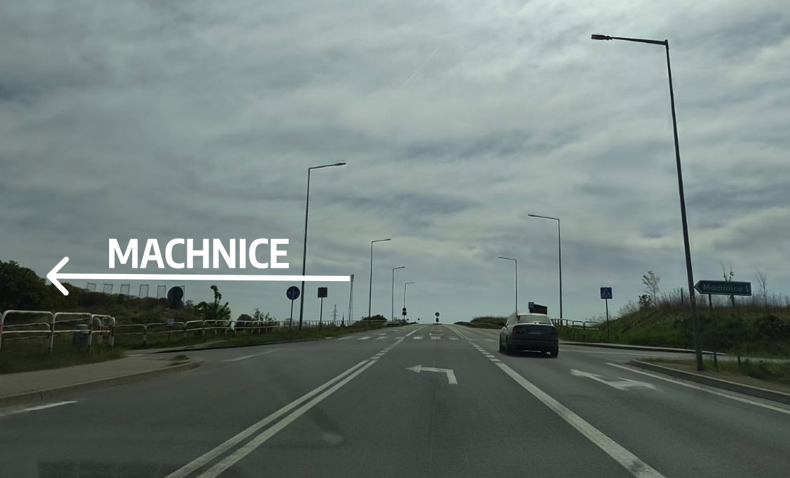

Jadąc drogą wojewódzką nr 359, wypatrujcie skrętu do Machnic:
Podążajcie dalej ok. 1km drogą asfaltową . Następnie szukajcie małej czerwonej tabliczki na Wzgórze 208, tuż przed końcem asfaltowej drogi. Tam skręćcie w szutrową drogę i jedźcie jeszcze przez ok. 1km, a znajdziecie się na miejscu.